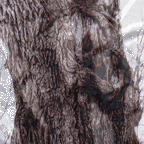

Ann Van Voorhis

Chillicothe's Largest American Elm
"This Ulmus Americana has been located in Chillicothe, Ohio for about 300 years, which is about 100 years older than Chillicothe. It is about 118 feet tall with a circumference of 266 inches and an average branch spread of 107 feet. It is located at 30 Western Ave. , at the Victoria Manor Bed and Breakfast. Not only has this beautiful tree survived disease and devolpment, it has also been honored in recent years with a plaque commemorating it's survival."
-Ann Van Voorhis
© Ann Van Voorhis
"Chillicothe's Largest American Elm"
Computer Graphics
Common Name: American Elm
Latin Name: Ulmus americana
Circumference: 266 inchs
Location: Chillicothe,Ohio USA
 Return to Main Page
Return to Main Page
Comments
Please send e-mail to: June Julian jj68@nyu.edu